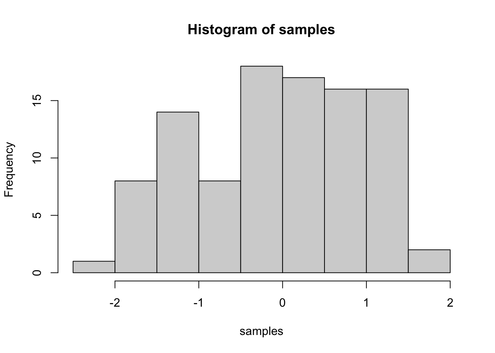

This is a weekly industry analysis repository where you can find out my previous projects and what industries I'm interested in.
2021 | 4 | 11 Last compiled: 2021-04-16
选取UI设计课程作品-游购
产品核心说明：
动词：购买; 沟通; 游玩; 协助
名词：需求; 购买力; 行动力; 平台
动名词组：填满需求; 提供平台; 协助沟通交流
分析：动词的专业程度不够，并且更多的是服务性，应该结合行业，政策法规考虑；名词围绕在在平台与用户身上，在动词补充的基础上，拓展用户-产品-市场的可能性。
动词拓展：合规; 签署; 委托
名词拓展：税法; 合约; 平台中介
动名词组拓展：透彻研究法律合规性; 双方签署无责声明; 委托平台作为中介
组合后分析：增加与完善了利害者的相关分析，并结合产品给出解决动名词的方案。
利害关系人选取：科丝美诗美妆代工厂；广州独角兽企业逸仙电商
行业报告：iresearch关于GenerationZ的美妆护肤消费洞察报告-提取密码:xc1d
报告分析：What is GenerationZ?-fromWikiPediaZ世代是继干禧一代和Alpha世代之后的人口统计队列。研究人员和大众媒体将1990年代中后期作为出生年份,将2010年代初作为出生年份终止。Z一代的大多数成员都是X一代的孩子, 但也有一些新千年的儿童。作为第一个完全在数字时代出生的群体，Z世代网络生活丰富，自我充电不只有娱乐也有知识学习,人均每天线上时长逾5小时,再加上良好的付费意识,他们也拥有较高的线上消费力。后颜值经济时代下,精致是Z世代的x面标签之一,在时尚消费中以美妆护肤、潮流配饰和香水香氛作为前三必备。用资生堂中国研究开发中心高级研究员-周威的话说：「对于美妆护肤Z世代的需求不仅是改善皮肤,更多的是情绪价值的传递」。作为顶级美妆代工厂，应该迎合Z时代的美妆意识形式潮流，在应该有的安全基础上，注重提升产品幸福指数，产品多样化，打通互联网数字营销渠道，更好的为Z世代服务。而独角兽企业逸仙电商平台，应该在大数据的支撑下，精进算法，为性别，肤质，经济实力等方面不同的Z世代提高便利性。
什么是Digital Agency?
数字代理商将图形设计和文案写作与新技术和现代营销技术结合在一起。结果是艺术，科学，工程和决心的高度创造性的结合，以在瞬息万变的环境中解决问题并找到解决方案。主要服务是：网站设计和开发，应用程序，搜索引营销（每次点击付费，重新定位），搜索引擎优化，社交媒体营销，内容创建，在线潜在客户生成，在线品牌开发和管理，媒体活动，视频，电子邮件营销，移动广告系列和投资回报率评估。
Digital Agency rank in Hongkong
分析服务商DigiSalad
CLIENT WYNN MACAU（永利澳门）
CATEGORIES UX STRATEGY, UI DESIGN, MOBILE APP DEVELOPMENT, RESPONSIVE APP DEVELOPMENT（体验策略，用户界面设计，移动应用程序开发，响应式应用程序开发）
Main Business Model Analysis
重要合作伙伴：搜索引擎公司；Sass云服务企业；互联网律所；云服务器平台；自媒体平台
关键业务：UX,UI设计；响应式网页,移动端程式应用开发；自媒体平台数字营销
核心资源：针对性的全面市场行业研究；基于大数据的用户数字化旅程设计；全方面的用户验收测试（UAT）方法；众多的案例设计模版
客户群体：永利澳门客房营销部，永利澳门宣传部等
项目介绍：
澳门永利酒店是澳门的豪华酒店和赌场度假胜地。它在蓬勃发展的中国领土开创了精致度假胜地选择的新时代。继获得7项福布斯五星级大奖后，永利渡假村于2017年开设了“永利皇宫”，作为其在澳门的第二家豪华综合度假胜地。市场营销主持人现有的酒店客房预订使用的是手动流程。永利澳门和永利皇宫遍布2,700多间布置精美的客房，这给员工施加了压力，要求他们始终保持正确的工作细节，数据输入不一致，出现错误的地方，输入错误的信息等。DigiSalad努力实现一种更有效的方式来帮助游戏客户预订酒店房间，并帮助营销团队更好地控制酒店房间的分配。DigiSalad在用户旅程图，线框，用户界面设计等方面一直与客户紧密合作，从一路发展到交付新的高效系统，就是要取代人工流程。新系统提供了灵活的审批流程，并与Opera，GENESIS客户管理（GCM）和基于GENESIS委员会的程序播放（CBPP）系统进行了实时集成。允许市场营销主持人根据其团队的分配请求新的预订，以及编辑和取消预订。市场营销主持人可以查看酒店房间分配的实时信息和预订信息。DigiSalad使用IP白名单来控制系统的访问。如果营销主持人不在永利的财产范围内，则身份验证需要两个因素来验证自己。该系统还支持具有受限或完全访问权限的多个用户。管理员可以为特定用户创建权限并将其分配给特定用户，并限制他们可以访问，删除或更新的数据。
You can add more headers by adding more hashtags. These won’t be put into the table of contents
Here’s an even lower level header
2018 | 7 | 23 Last compiled: 2021-04-15
I’m writing this tutorial going from the top down. And, this is how it will be printed. So, notice the second post is second in the list. If you want your most recent post to be at the top, then make a new post starting at the top. If you want the oldest first, do, then keep adding to the bottom
So far this is just a blog where you can write in plain text and serve your writing to a webpage. One of the main purposes of this lab journal is to record your progress learning R. The reason I am asking you to use this process is because you can both make a website, and a lab journal, and learn R all in R-studio. This makes everything really convenient and in the sam place.
So, let’s say you are learning how to make a histogram in R. For example, maybe you want to sample 100 numbers from a normal distribution with mean = 0, and standard deviation =1, and then you want to plot a histogram. You can do this right here by using an r code block, like this:
samples <- rnorm(100, mean=0, sd=1)
hist(samples)
When you knit this R Markdown document, you will see that the histogram is printed to the page, along with the R code. This document can be set up to hide the R code in the webpage, just delete the comment (hashtag), from the cold folding option in the yaml header up top. For purposes of letting yourself see the code, and me see the code, best to keep it the way that it is. You learn all of these things and more can be customized in each R code block.
Use this lab journal to record what you do in R. This way I will be able to see what you are doing and help you along the way. You will also be creating a repository of all the things you do. You can make posts about everything. Learning specific things in R (project unrelated), and doing things for the project that we will discuss at the beginning of the Fall semester. You can get started now by fiddling around with googling things, and trying stuff out in R. I’ve placed some helpful starting links in the links page on this website
It’s hard to learn programming when you don’t have specific problems that you are trying to solve. Everything just seems abstract.
I wrote an introductory programming book that introduces R, and gives some concrete problems for you to solve.
To get the hang of journaling and solving the problems to learn programming, my suggestion is that you use this .Rmd file to solve the problems. It would look like this:
Do simple math with numbers, addition, subtraction, multiplication, division
1+2## [1] 32*5## [1] 105/3## [1] 1.666667(1+6+4)/5## [1] 2.2Put numbers into variables, do simple math on the variables
a<-1
b<-2
a+b## [1] 3d<-c(1,2,3)
e<-c(5,6,7)
d+e## [1] 6 8 10d*e## [1] 5 12 21d/e## [1] 0.2000000 0.3333333 0.4285714Write code that will place the numbers 1 to 100 separately into a variable using for loop. Then, again using the seq function.
# for loop solution
# i becomes the number 1 to 100 at each step of the loop
a <- length(100) # make empty variable, set length to 100
for (i in 1:100){
a[i] <-i #assigns the number in i, to the ith index of a
}
print(a)## [1] 1 2 3 4 5 6 7 8 9 10 11 12 13 14 15 16 17 18
## [19] 19 20 21 22 23 24 25 26 27 28 29 30 31 32 33 34 35 36
## [37] 37 38 39 40 41 42 43 44 45 46 47 48 49 50 51 52 53 54
## [55] 55 56 57 58 59 60 61 62 63 64 65 66 67 68 69 70 71 72
## [73] 73 74 75 76 77 78 79 80 81 82 83 84 85 86 87 88 89 90
## [91] 91 92 93 94 95 96 97 98 99 100# for loop solution #2
a<-c() #create empty variable using combine command
for (i in 1:100){
a<-c(a,i) # keeps combining a with itself and the new number in i
}
print(a)## [1] 1 2 3 4 5 6 7 8 9 10 11 12 13 14 15 16 17 18
## [19] 19 20 21 22 23 24 25 26 27 28 29 30 31 32 33 34 35 36
## [37] 37 38 39 40 41 42 43 44 45 46 47 48 49 50 51 52 53 54
## [55] 55 56 57 58 59 60 61 62 63 64 65 66 67 68 69 70 71 72
## [73] 73 74 75 76 77 78 79 80 81 82 83 84 85 86 87 88 89 90
## [91] 91 92 93 94 95 96 97 98 99 100# seq solution
a <- seq(1,100,1) # look up help for seq using ?seq() in console
print(a)## [1] 1 2 3 4 5 6 7 8 9 10 11 12 13 14 15 16 17 18
## [19] 19 20 21 22 23 24 25 26 27 28 29 30 31 32 33 34 35 36
## [37] 37 38 39 40 41 42 43 44 45 46 47 48 49 50 51 52 53 54
## [55] 55 56 57 58 59 60 61 62 63 64 65 66 67 68 69 70 71 72
## [73] 73 74 75 76 77 78 79 80 81 82 83 84 85 86 87 88 89 90
## [91] 91 92 93 94 95 96 97 98 99 100And keep going. Try to solve the problems with different scripts that provide the same solution. Good luck, Happy coding.